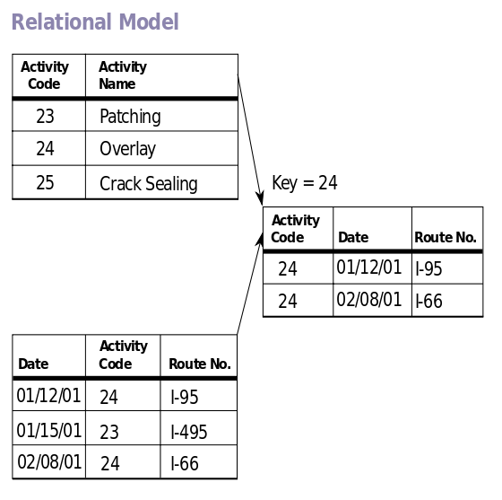

Sistem Basis Data
Pengenalan Relational Database Management System (RDBMS)
Terminologi
- Database:
an organized collection of data.
- Data (plural)/Datum (singular):
fakta tentang suatu objek atau kejadian yang dapat dicatat dan disimpan ke dalam media penyimpanan.
- System:
kumpulan komponen yang saling berinteraksi untuk menjalankan suatu fungsi
- Database Management System (DBMS):
sistem untuk mengelola database
Kenapa butuh sistem basis data
- Memudahkan operasi terhadap database (Create, Read, Update, Delete)
- Memudahkan administrasi database (Access, Backup, Restore)
Persyaratan Sistem Basis Data
Atomicity, Consistency, Isolation, Durability -- ACID
- Atomicity
- Operasi yang dijalankan harus berhasil seluruhnya atau tidak dikerjakan sama sekali.
- Consistency
- perubahan yang dilakukan terhadap database harus konsisten sesuai dengan aturan/constraint yang didefinisikan.
Persyaratan Sistem Basis Data
- Isolation
- operasi terhadap database harus dilakukan secara mandiri tidak tumpang tindih. Apabila ada dua atau lebih operasi yang dijalankan, operasi tersebut harus dijalankan secara sequential.
- Durability
- operasi yang telah di-commit ke database harus bertahan terhadap masalah-masalah yang mungkin timbul.
Database Relasional
- Data diorganisasikan ke dalam satu atau lebih tabel (relation), terdiri dari kolom (atribute/field) dan baris (record/tuple).
- Relational Database Management System - RDBMS

Relational Database Management
- Oracle Database
- Microsoft SQL Server
- MySQL/MariaDB
- PostgreSQL
- IBM DB2
- Sybase
Relational Database Management
- Data diorganisasikan ke dalam tabel-tabel
- Setiap tabel terdiri dari kolom dan baris
- Kolom merepresentasikan jenis/tipe data (atribute/field)
- Baris merepresentasikan instance data (record/tuple)
- Setiap tabel dapat dihubungkan dengan tabel lainnya berdasarkan data pada kolom tertentu
- Bahasa yang populer digunakan untuk melakukan query terhadap RDBMS adalah Structured Query Language (SQL)
Structured Query Language
- Special-purpose programming language untuk mengelola RDBMS
-
- Data Definition Language (DDL)
- Untuk mendefinisikan object database (schema/table, view, dll).
- Data Manipulation Language (DML)
- Untuk melakukan operasi CRUD terhadap database.
- Data Control Language (DCL)
- Untuk mendefinisikan access control terhadap object database
- Masing-masing vendor menambahkan fitur khusus ke SQL yang bersifat propiertary.